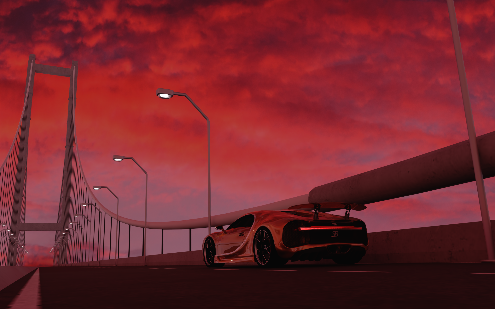

My Projects

Blender Render Utilities - A Blender addon
A Blender addon that provides quick access to resolution presets for different screen ratios and platforms. This tool simplifies setting up render resolutions for social media content, filmmaking, and custom aspect ratios, making it easier for creators to maintain consistency across various formats.
View CodeBlender Render Utilities - A Blender addon
A Blender addon that provides quick access to resolution presets for different screen ratios and platforms. This tool simplifies setting up render resolutions for social media content, filmmaking, and custom aspect ratios, making it easier for creators to maintain consistency across various formats.
View Code